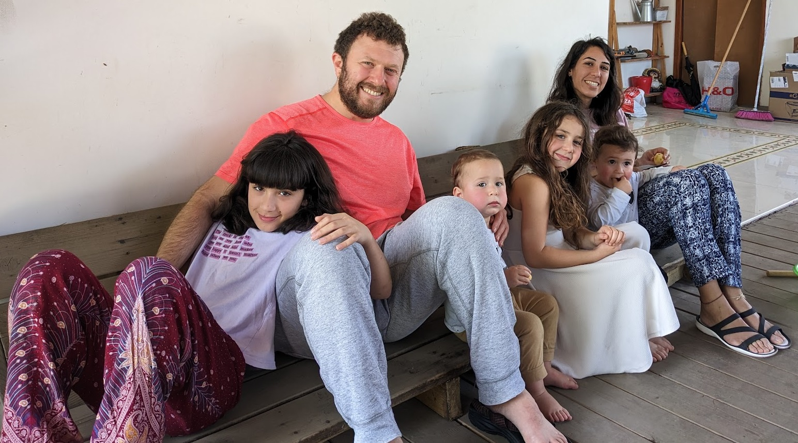
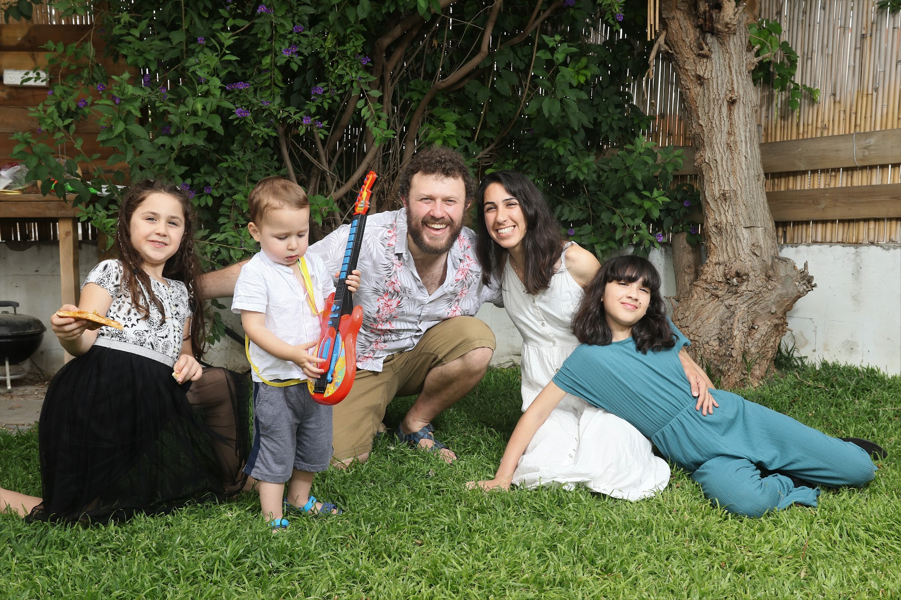

About Me
I am a faculty member at the Computer Science Department at Bar Ilan University.
Prior to joining Bar Ilan, I was a postdoc at the Computer Science Department at Columbia University, hosted by
Alex Andoni.
The postdoc was part of the the Simons Collaboration on Algorithms and Geometry.
I did my PhD at the Computer Science Department at Ben Gurion University of the Negev.
I was fortunate to be advised by Ofer Neiman and
Robert Krauthgamer.
My research interest is in theoretical computer science. More specifically: Metric Spaces, Low-Distortion Embeddings, Randomized Algorithms and Approximation.
I am recruiting excellent graduate students to our research group. If you are interested, don't hesitate to shoot me an email!
Check out our Bar-Ilan Theory seminar !
Check out our FOCS 2022 workshop “ Advances on Metric Embeddings ” I co-organized with Hung Le. There are video recordings of all the talks!
Contact information
Arnold Filtser Email: arnold.filtser at biu dot ac dot ilOffice: Bar-Ilan university, bldg 503, room 307

<>

<>
Video
This page includes several talks regarding my research papers.- How to Protect Yourself from Threatening Skeletons: Optimal Padded Decompositions for Minor-Free Graphs
[ Video , 65 min, Workshop on High-Dimensional and Complex Data Algorithms (Venice), May 2025]
- On Sparse partitions
[ Video , 45 min, DIMACS Workshop on Efficient Algorithms for High Dimensional Metrics: New Tools, May 2024]
- Locality-Sensitive Orderings
[ Video , 60 min, Bar-Ilan Theory Seminar, January 2023]
- Locality-Sensitive Orderings and Applications to Reliable Spanners
[ Video , 24 min, STOC 2022 presentation]
[ Video , 48 min, IDEAL Workshop on High-Dimensional Geometry and Analysis] - Survey: Metric Embeddings into Trees and its Various Spin-offs
[ Video , 83 min, Dagshtul 25212: Metric Sketching and Dynamic Algorithms for Geometric and Topological Graphs, May 2025]
- Metric Embedding into Trees
[ Video , 85 min, BIU lecture for undergrands, July 2024] Prospective students, start here!
[ Video , 53 min, FOCS workshop on metric embeddings, November 2022]
[ Video , 83 min, HUJI theory seminar, March 2022] - Hop-Constrained Metric Embeddings and their Applications
[ Video , 20 min, FOCS 2021 presentation]
The matirial is also covered by the Metric Embedding into Trees talk. - Clan Embeddings into Trees, and Low Treewidth Graphs
[ Video , 29 min, STOC 2021 presentation]
[ Video , 67 min, Open University of Israel colloquium 2022, in Hebrew!]
The matirial is also covered by the Metric Embedding into Trees talk. - Graph Spanners by Sketching in Dynamic Streams and the Simultaneous Communication Model
[ Video , 25 min, SODA 2021 presentation] - Distributed Construction of Light Networks
[ Video , 20 min, PODC 2020 presentation] [ Slides ] - Scattering and Sparse Partitions, and their Applications
[ Video 1 , 45 min, recorded during Simons algorithms and geometry collaboration Monthly meeting, January 2020] [ Simons slides ]
[ Video 2, 60 min, recorded during Stony Brook (online) algorithms seminar, April 2020]
[ ICALP presentation, 23 min, ICALP 2020 presentation] [ ICALP slides ]
- On Strong Diameter Padded Decompositions
[ Video , 25 min] [ Slides ] - On metric embeddings, shortest path decompositions and face cover of planar graphs
[ Video , 45 min, recorded during a workshop on data science in low-dimensional spaces] - Metric Embedding via Shortest Path Decompositions
[ Video , 19 min, recorded during STOC 18] - Steiner Point Removal with distortion O(logk), using the Noisy-Voronoi algorithm
[ Video , 68 min] [ Slides ] - Ramsey Spanning Trees and their Applications
[ Video , 32 min] [ Slides ] - The Greedy Spanner is Existentially Optimal
[ Video , 35 min] - On Notions of Distortion and an Almost Minimum Spanning Tree with Constant Average Distortion
[ Video , 28 min] [ Slides ]
Publications
- How to Protect Yourself from Threatening Skeletons: Optimal Padded Decompositions for Minor-Free Graphs
Jonathan Conroy, Arnold Filtser
To appear in STOC 2025.
[ Arxiv version ] - Faster Approximation Algorithms for k-Center via Data Reduction
Arnold Filtser, Shaofeng H.-C. Jiang, Yi Li, Anurag Murty Naredla, Ioannis Psarros, Qiaoyuan Yang, Qin Zhang
To appear in ICML 2025.
[ Arxiv version ] - Highway Dimension: a Metric View
Andreas Emil Feldmann, Arnold Filtser
In SODA 2025.
[ Arxiv version ] [ Conference version ] - FPT approximations for Capacitated Sum of Radii and Diameters
Arnold Filtser, Ameet Gadekar
[ Arxiv version ] - Optimal Padded Decomposition For Bounded Treewidth Graphs
Arnold Filtser, Tobias Friedrich, Davis Issac, Nikhil Kumar, Hung Le, Nadym Mallek, Ziena Zeif
[ Arxiv version ] - Near-Optimal Approximate Fully-Dynamic All-Pairs Shortest Paths in Planar Graphs
Arnold Filtser, Gramoz Goranci, Neel Patel, Maximilian Probst Gutenberg
In FOCS 2024.
[ Conference version ] - On Sparse Covers of Minor Free Graphs, Low Dimensional Metric Embeddings, and other applications
Arnold Filtser
To appear in SOCG 2025.
[ Arxiv version ] - Light, Reliable Spanners
Arnold Filtser, Yuval Gitlitz, Ofer Neiman
In SOCG 2024
[ Conference version ] [ Arxiv version ] - Online Duet between Metric Embeddings and Minimum-Weight Perfect Matchings
Sujoy Bhore, Arnold Filtser, Csaba D. Tóth
In SODA 2024.
[ Conference version ] [ Arxiv version ] - One Tree to Rule Them All: Poly-Logarithmic Universal Steiner Tree
Costas Busch, Da Qi Chen, Arnold Filtser, Daniel Hathcock, D Ellis Hershkowitz, Rajmohan Rajaraman
In FOCS 2023.
[ Conference version ] [ Arxiv version ] [ Video (Talk by Ellis Hershkowitz)] [ Video (Talk on sparse partitions)] - Labeled Nearest Neighbor Search and Metric Spanners via Locality Sensitive Orderings
Arnold Filtser
In SOCG 2023.
[ Conference version ] [ Arxiv version ] [ Video (SOCG presentation)] - Streaming Facility Location in High Dimension via Geometric Hashing
Artur Czumaj, Arnold Filtser, Shaofeng H.-C. Jiang, Robert Krauthgamer, Pavel Veselý, Mingwei Yang
[ Arxiv version ] - Expander Decomposition in Dynamic Streams
Arnold Filtser, Michael Kapralov, Mikhail Makarov
In ITCS 2023.
[ Conference version ] [ Arxiv version ] [ Video (ITCS presentation by Mikhail Makarov)] - Communication Complexity of Inner Product in Symmetric Normed Spaces
Alexandr Andoni, Jarosław Błasiok, Arnold Filtser
In ITCS 2023.
[ Conference version ] [ Arxiv version ] - Low Treewidth Embeddings of Planar and Minor-Free Metrics
Arnold Filtser, Hung Le
In FOCS 2022.
[ Conference version ] [ Arxiv version ] [ Video (FOCS presentation by Hung Le)] - Online Spanners in Metric Spaces
Sujoy Bhore, Arnold Filtser, Hadi Khodabandeh, Csaba D. Tóth
In ESA 2022.
In SIDMA 2024.
[ Conference version ] [ Arxiv version ] [ Journal version ] - Locality-Sensitive Orderings and Applications to Reliable Spanners
Arnold Filtser, Hung Le
In STOC 2022.
[ Conference version ] [ Arxiv version ] [ Video (STOC presentation)] [ Video (IDEAL workshop)] - Hop-Constrained Metric Embeddings and their Applications
Arnold Filtser
In FOCS 2021.
[ Conference version ] [ Arxiv version ] [ Video (FOCS presentation)] - Clan Embeddings into Trees, and Low Treewidth Graphs
Arnold Filtser, Hung Le
In STOC 2021.
[ Conference version ] [ Arxiv version ] [ Video (STOC presentation)] [ Video (in Hebrew)] - Condorcet Relaxation in Spatial Voting (or Plurality in Spatial Voting Games with Constant β)
Arnold Filtser, Omrit Filtser
In AAAI 2021.
In DCG 2023.
[ Journal version ] [ Conference version ] [ Arxiv version ] - Graph Spanners by Sketching in Dynamic Streams and the Simultaneous Communication Model
Arnold Filtser, Michael Kapralov, Navid Nouri
In SODA 2021.
[ Conference version ] [ Arxiv version ] [ Video (SODA presentation)] - Static and Streaming Data Structures for Fréchet Distance Queries
Arnold Filtser, Omrit Filtser
In SODA 2021.
In TALG 2023.
[ Conference version ] [ Arxiv version ] [ Journal version ] [ Video (SODA presentation by Omrit Filtser)] - On light spanners, low-treewidth embeddings and efficient traversing in minor-free graphs
Vincent Cohen-Addad, Arnold Filtser, Philip N. Klein, Hung Le
In FOCS 2020.
[ Conference version ] [ Arxiv version ] [ Video (FOCS presentation by Hung Le)] - Distributed Construction of Light Networks
Michael Elkin, Arnold Filtser, Ofer Neiman
In PODC 2020.
[ Conference version ] [ Arxiv version ] [ Video (PODC presentation)] - Scattering and Sparse Partitions, and their Applications
Arnold Filtser
In ICALP 2020.
In TALG 2024.
[ Conference version ] [ Arxiv version ] [ Journal version ] [ Video 1] [ Video 2] [ Video 3 (ICALP presentation)] - Approximate Nearest Neighbor for Curves --- Simple, Efficient, and Deterministic
Arnold Filtser, Omrit Filtser, Matthew J. Katz
In ICALP 2020.
In Algorithmica 2023.
[ Journal version ] [ Conference version ] [ Arxiv version ] [ Video (ICALP presentation by Omrit Filtser)] - Labelings vs. Embeddings: On Distributed Representations of Distances
Arnold Filtser, Lee-Ad Gottlieb, Robert Krauthgamer
In SODA 2020.
In DCG 2024.
[ Journal version ] [ Conference version ] [ Arxiv version ] - A Face Cover Perspective to ℓ1 Embeddings of Planar Graphs
Arnold Filtser
In SODA 2020.
In TALG 2025.>
[ Conference version ] [ Journal version ] [ Arxiv version ] [ Video] - On Strong Diameter Padded Decompositions
Arnold Filtser
In Approx 2019.
[ Conference version ] [ Arxiv version ] [ Slides ] [ Video ] - Constructing Light Spanners Deterministically in Near-Linear Time
Stephen Alstrup, Søren Dahlgaard, Arnold Filtser, Morten Stöckel, Christian Wulff-Nilsen
In ESA 2019.
In TCS 2022 (Theoretical Computer Science).
[ Journal version ] [ Conference version ] [ Arxiv version ] - Relaxed Voronoi: a Simple Framework for Terminal-Clustering Problems
Arnold Filtser, Robert Krauthgamer, Ohad Trabelsi
In SOSA 2019.
[ Conference version ] [ Arxiv version ] - Light Spanners for High Dimensional Norms via Stochastic Decompositions
Arnold Filtser, Ofer Neiman
In ESA 2018.
In Algorithmica 2022
[ Full version ] [ Conference version ] [ Arxiv version ] [ Jurnal version ] - Metric Embedding via Shortest Path Decompositions
Ittai Abraham, Arnold Filtser, Anupam Gupta, Ofer Neiman
In STOC 2018.
In SICOMP 2022. (SIAM Journal on Computing)
[ Journal version ] [ Conference version ] [ Arxiv version ] [ Video 1 (STOC presentation)] [ Video 2] - Steiner Point Removal with Distortion O(log k)
Arnold Filtser
In SODA 2018.
[ Conference version ] [ Arxiv version ] [ Slides ]
Steiner Point Removal with distortion O(logk), using the Relaxed-Voronoi algorithm
This is the full version of the paper. The name was change in order to emphasis the different algorithm analysed in this paper.
In SICOMP 2019. (SIAM Journal on Computing)
[ Journal version ] [ Arxiv version ] [ Video ] - Ramsey Spanning Trees and their Applications
Ittai Abraham, Shiri Chechik, Michael Elkin, Arnold Filtser, Ofer Neiman
In SODA 2018.
In TALG 2020 (Transactions on Algorithms).
[ Journal version ] [ Conference version ] [ Arxiv version ] [ Video ] [ Slides ] - Sparsification of Two-Variable Valued CSPs
Arnold Filtser, Robert Krauthgamer
In SIDMA 2017 (Siam journal on discrete mathematics).
[ Journal version ] [ Arxiv version ] - Distributed Monitoring of Election Winners
Arnold Filtser, Nimrod Talmon
In AAMAS 2017. Was nominated for best paper award. (what?!)
In AIJ 2019 (Artificial Intelligence Journal).
[ Full version ] [ Journal version ] [ Conference version ] [ Arxiv version ] - The Greedy Spanner is Existentially Optimal
Arnold Filtser, Shay Solomon
In PODC 2016. Best student paper.
In SICOMP 2020 (SIAM Journal on Computing).
[ Full version ] [ Journal version ] [ Conference version ] [ Arxiv version ] [ Video ] - On Notions of Distortion and an Almost Minimum Spanning Tree with Constant Average Distortion
Yair Bartal, Arnold Filtser, Ofer Neiman
In SODA 2016.
In JCSS 2019. (Journal of Computer and System Sciences)
[ Journal version ] [ Conference version ] [ Arxiv version ] [ Video ] [ Slides ] - Prioritized Metric Structures and Embedding
Michael Elkin, Arnold Filtser, Ofer Neiman
In STOC 2015.
In SICOMP 2018. (SIAM Journal on Computing)
[ Full version ] [ Journal version ] [ Conference version ] [ Arxiv version ] - Terminal Embeddings
Michael Elkin, Arnold Filtser, Ofer Neiman
In Approx 2015.
In TCS 2017 (Theoretical Computer Science).
[ Journal version ] [ Conference version ] [ Arxiv version ] - Efficient determination of the unique decodability of a string
Arnold Filtser, Jiaxi Jin, Areyh Kontorovich, Ari Trachtenberg
In ISIT 2013.
[ Conference version ]
Supervisors: Michael Elkin and Ofer Neiman.
Supervisors: Robert Krauthgamer and Ofer Neiman.
Teaching:
- Spring 2019:
- Spring 2018:
- Spring 2017:
- Spring 2016:
- Spring 2015:
- Fall 2015:
- Spring 2014:
- Fall 2014:
- Spring 2013:
- Fall 2013:
Grading:
- Fall 2019:
- Fall 2018:
- Fall 2017:
- Fall 2016:
Honors
Why not stroke your academic ego a little and list honors, awards and scholarships you have received?
If you happen to be a more modest type, you can hide this tab by editing the #navbar section of the index.html. Below is a sample template for honors:
- 2012 "Dance Your Ph.D" Contest winner
- Member of the worlds largest multiple-player-single-guitar band
- Generally awesome
Best Relative Award
The Best Relative Award is given annually by the Filtser family cooperation*, to a family member of the Filtser family, as recognition for great investment and donation to the family.
Best Relative Award Laureates:
- 2015 - Emi Filtser - for successful graduating from high school.
- 2014 - Yosi Filtser - for successful discharging from the military (and staying alive).
- 2013 - Naama Filtser - for being born.
- 2012 - Omrit Filtser - for creating an infrastructure for the family to spread and multiply.
*The head and sole member of the Filtser family cooperation is Arnold Filster.
Personal
I am married to Omrit Filtser (who is also in theory!), and father of Naama, Hadass, Ehud Emmanuel, and Boaz Lazer.

